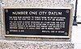

geodetic-datum

Definition: A geodetic datum or geodetic system (also: geodetic reference datum, geodetic reference system, or geodetic reference frame) is a global datum reference or reference frame for precisely representing the position of locations on Earth or other planetary bodies by means of geodetic coordinates. Datums are crucial to any technology or technique based on spatial location, including geodesy, navigation, surveying, geographic information systems, remote sensing, and cartography. A horizontal datum is used to measure a location across the Earth's surface, in latitude and longitude or another coordinate system; a vertical datum is used to measure the elevation or depth relative to a standard origin, such as mean sea level (MSL). Since the rise of the global positioning system (GPS), the ellipsoid and datum WGS 84 it uses has supplanted most others in many applications. The WGS 84 is intended for global use, unlike most earlier datums.
Source: Wikipedia
Wikipedia Page (Something wrong with this association? Let us know.)
Wikidata Page (Something wrong with this association? Let us know.)